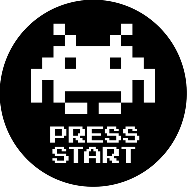

RÉALISATIONS

Développement d'un site Web de communications interne
Février 2025 : IUT de Lille
HTML, CSS, JavaScript, Java, SQL
GitLab
Résumé :
L'application est un site Web développé avec HTML, CSS et bootstrap pour le front end, et avec du JavaScript et du Java pour le back end.Elle permet, à la manière de skype, de se créer un compte afin d'envoyer des messages aux autres utilisateurs. L'application permet également d'envoyer des images, d'ajouter des réactions aux messages envoyés et de créer des groupes avec les autres utilisateurs.
Développement d'une application utilisant l'agorithme Knn
Novembre 2024 : IUT de Lille
Java, JavaFX
Résumé :
L'application est une application de bureau developpé avec la librairie JavaFX.Elle permet à l'utilisateur d'importer un jeu de données, idéalement au format CSV. Ensuite, l'application trie les données selon des colonnes précises, et permet à l'utilisateur d'ajouter une nouvelle donnée.
Développement d'un jeu en JS en ligne
Avril 2024 : IUT de Lille
JavaScript, TypeScript, Socket
Résumé :
Le jeu est une application Web, développé en JS, possédant un écran principal avec la possiblité de lancer une partie solo ou multi, modifier les options, afficher les crédits ou les meilleurs scores.Lorsqu'une partie multijoueur est lancée, les règles principales du jeu peuvent être changer, et on code nous est donné pour qu'un autre joueur puisse rejoindre.
Lorsqu'un joueur lance une partie multijoueur, une room est créé sur le serveur de jeu, générant un code de room permettant aux autres joueurs de rejoindre.
Développement d'un jeu graphique en Java
Janvier 2024 : IUT de Lille
Java, MVC, Bot
Résumé :
Le jeu est une application Java, possédant un écran principal avec la possiblité de lancer une partie, modifier les options ou quitter le jeu.Lorsqu'une partie est lancée, les règles principales du jeu peuvent être changer, comme la taille de la carte, la possiblité de jouer contre un bot etc...
Le monstre évolue dans un labyrinthe contenant des obstacles, découpée en plusieurs cases.Le chasseur peut interagir avec ces cases pour essayer de trouver celle qui contient le monstre. Le but du monstre est de trouver la sortie du labyrinthe et le but du chasseur est de trouver le monstre dans le labyrinthe avant qu'il s'enfuit. Le chasseur ne peut rien voir sur la carte mais le contenu d'une case s'affiche seulement après avoir tiré sur cette case (contenue possible : un obstacle, le monstre ou le numéro du tour où le monstre est passé par cette case). Le monstre peut voir un nombre limité d'obstacles autour de lui et connaît la position de la sortie.
Développement d'un jeu dans un terminal
Septembre 2023 : IUT de Lille
Java, JSON, Bash
Résumé :
Le jeu est une application Java, jouable en ligne de commande, affichant, à l'aide de caractères ASCII, des salles où le joueur peut se déplacerChacune de ses salles sont stockés dans des fichiers TXT, chaque salle pouvant contenir des coffres, des objets ou encore des monstres
Lorsqu'un joueur change de salle, il peut ouvrir les coffres, récuperer les objets au sol, ou combattre les monstres. Un système de dé permet au joueur de se battre contre le monstre, et c'est le dé ainsi que les stats du joueur et du monstre qui déterminent l'issu du combat.

Développement d'un jeu en 2D
Janvier 2022 : IUT de Lille
Java, SQL, JFrame
Résumé :
Le jeu est une application Java, en 2D, développé avec la librairie Swing, s'inspirant du célèbre jeu space invader, et jouable à 60 images par secondeAu lancement du jeu, un écran apparait, avec des boutons pour lancer le jeu, afficher les high scores, changer les parametres ainsi que les keybinds
Le principe du jeu est simple, le joueur incarne un vaisseau qui se déplace uniquement horizontalement, et avec la possiblité de tirer en appuyant sur la barre espace. Des vagues de monstres apparaissent, et il est possible de tous les éliminer avec un tir. Un monstre tué donne des points en fonction de la vague actuel, et le joueur possède 3 vies.

Création d'un serveur de jeu
Mars 2020 - Mars 2021
Bash, Java, PSQL, NodeJS, Python, JDBC, Socket
Résumé :
La création du serveur de jeu a été faite dans le but d'hébérger un serveur pour le célèbre jeu Minecraft.L'achat d'un VPS a été requise, ainsi que l'installation d'une OS, ici debian. L'installation des librairies principales ont été requises, comme PSQL, php ou encore ufw
Beaucoup de languages différent ont été utilisés, comme Bash pour faire des scripts qui s'executent au démarage, Java pour faire des plugins pour le jeu en lui-même, PSQL pour gérer une base de données contenant les informations des joueurs, NodeJS pour faire un bot discord pour lier au jeu, Socket pour communiquer entre les différents serveurs, Python pour faire des communications et transfert de fichier entre différents programmes etc...